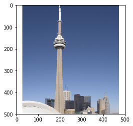
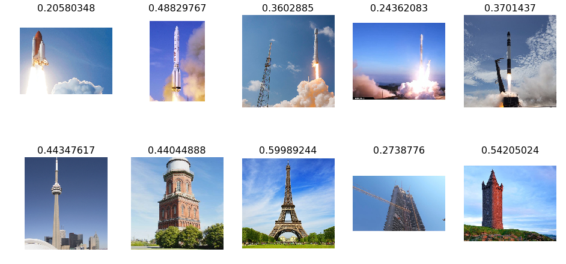

Rocket or Tower
Recently I started working on fast.ai and I wanted to post my first attempt at creating a network.
My train set contains 10 images of rockets and 10 images of towers

Using the the 3 line program from the the fast.ai library to use the precompiled models of resnet
arch=resnet34
data = ImageClassifierData.from_paths(PATH, tfms=tfms_from_model(arch, sz))
learn = ConvLearner.pretrained(arch, data, precompute=True)
learn.fit(0.01, 5)
0 is more rocket-like, 1 is more building-like
